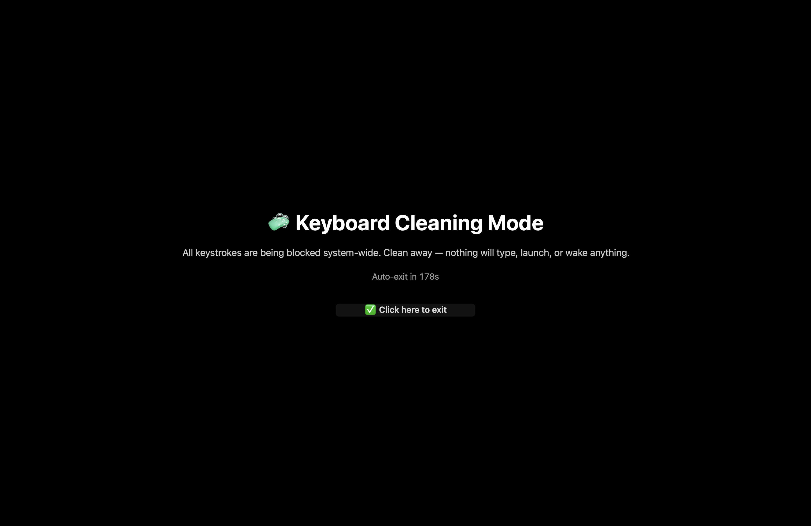

Cleaning a laptop keyboard always risked a stray keystroke launching an app, retyping into a document, or waking the machine back up mid-clean. I built a small open-source macOS utility to solve exactly that: a full-screen overlay that installs a system-wide event tap and swallows every keystroke — regular keys, modifiers, even the F-row/media keys for brightness and volume — before any of it reaches an app or the OS. The Mac stays fully on and logged in the whole time; you exit with a single mouse click on the overlay, with a 3-minute auto-timeout built in as a safety net. It's a Swift Package built aroundCGEventTap, the same low-level mechanism accessibility and key-remapping tools rely on. MIT licensed.